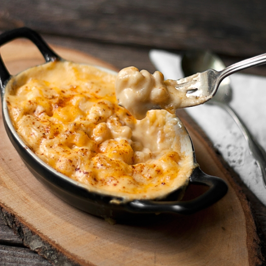

Macaroni

Macaroni and cheese is a quintessential comfort food beloved for its creamy texture and indulgent flavor. This classic dish features tender elbow macaroni noodles enveloped in a rich and velvety cheese sauce. The sauce, often made from a combination of butter, flour, milk, and cheese, is meticulously crafted to achieve the perfect balance of creaminess and cheesiness.
The macaroni noodles, typically cooked al dente to retain a satisfying bite, serve as the perfect canvas for the luscious cheese sauce to cling to, ensuring each forkful is bursting with savory goodness. The cheese sauce, often infused with sharp cheddar or a blend of cheeses, coats every nook and cranny of the pasta, delivering a symphony of flavors with each mouthful.
Whether baked to golden perfection with a breadcrumb topping or served stove-top for immediate gratification, macaroni and cheese never fails to evoke feelings of warmth and nostalgia. Its simplicity and versatility make it a beloved staple on family dinner tables, potluck gatherings, and comfort food menus alike. With its irresistible combination of tender pasta and creamy cheese sauce, macaroni and cheese is a timeless classic that brings joy and satisfaction to every bite.
ingrediants
- 2 cups elbow macaroni
- 2 tablespoons butter
- 2 tablespoons all-purpose flour
- 2 cups milk
- 2 cups shredded cheddar cheese
- Salt and pepper to taste
- Optional toppings: breadcrumbs, diced bacon, chopped parsley
steps
- Preheat your oven to 350°F (175°C). Grease a baking dish lightly with butter or non-stick cooking spray.
- Cook the macaroni according to the package instructions until al dente. Drain and set aside.
- In a large saucepan, melt the butter over medium heat. Once melted, add the flour and whisk constantly for 1-2 minutes to create a roux, ensuring no lumps remain.
- Gradually pour in the milk while whisking continuously to prevent lumps from forming. Cook the mixture, stirring frequently, until it thickens and begins to bubble, about 5 minutes.
- Reduce the heat to low and stir in the shredded cheddar cheese until fully melted and the sauce is smooth. Season with salt and pepper to taste.
- Add the cooked macaroni to the cheese sauce, stirring until the macaroni is evenly coated.
- Transfer the macaroni and cheese mixture to the prepared baking dish, spreading it out evenly.
- If desired, sprinkle breadcrumbs evenly over the top for a crunchy topping. You can also add diced bacon for extra flavor.
- Bake in the preheated oven for 20-25 minutes, or until the top is golden brown and the cheese is bubbly.
- Once baked, remove from the oven and let it cool for a few minutes before serving. Garnish with chopped parsley if desired.
- Serve the classic macaroni and cheese hot as a comforting and satisfying dish for any occasion. Enjoy!